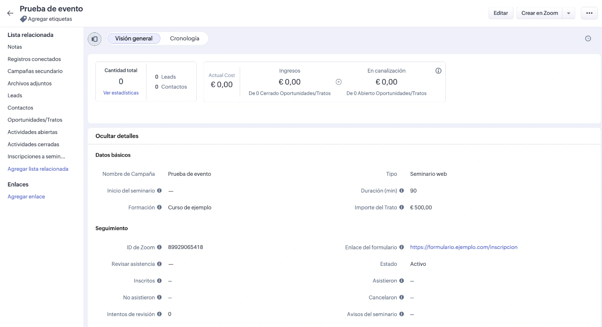
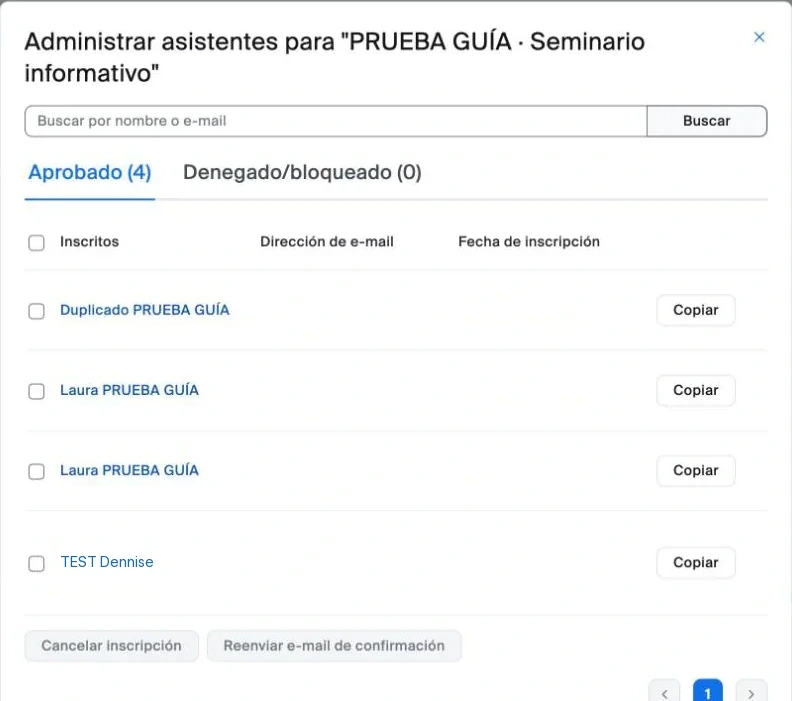
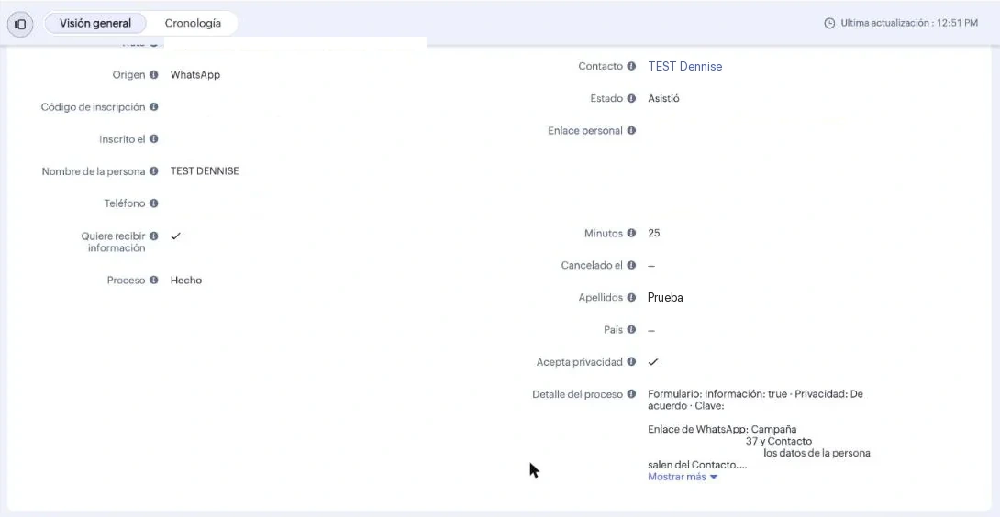

Project 6 · Online seminarsAll projects
Online seminars where you know who registered and who actually attended.
I built it for a training centre. Each registration creates the person's record and sends them their link. At the end, it records whether they attended.
The registration list, which fills itself in
Information seminarRegistration list
Ana LópezRegisteredSent by messageAttended· 42 min
Luis MarínRegisteredSent by messageDid not attend · 8 min
Carmen VidalRegisteredSent by messageAttended· 25 min
Pablo RíosRegisteredSent by messageCancelled their place
Luis MarínSigns up againAlready registered. No duplicate record is created.
Being connected for 20 minutes or more counts as attendance. It is saved in each person's record.
The real tool






Before and now
| Task | Before | Now |
|---|---|---|
| Registration | It was managed with several tools and a spreadsheet. | It creates the person's record straight away. |
| Duplicate people | The same person appeared twice. | It searches by email and phone before creating anything. |
| Attendance | Nobody knew for sure who had attended. | It is saved in each person's record, with the minutes. |
What I did
- I designed the full journey: registration, link, attendance and cancellation.
- I made it search for the person by email and phone to avoid creating duplicate records.
- I tested it with a hundred registrations at once and a test live session.
- I wrote a guide with screenshots for the centre's team.
Built withZoho CRM · Zoom · Zoho Forms · Zoho Flow · WhatsApp